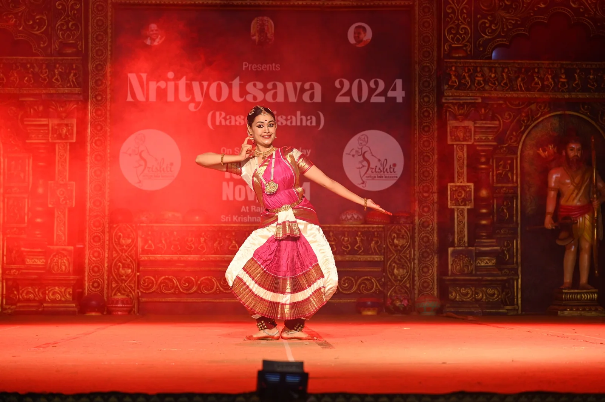
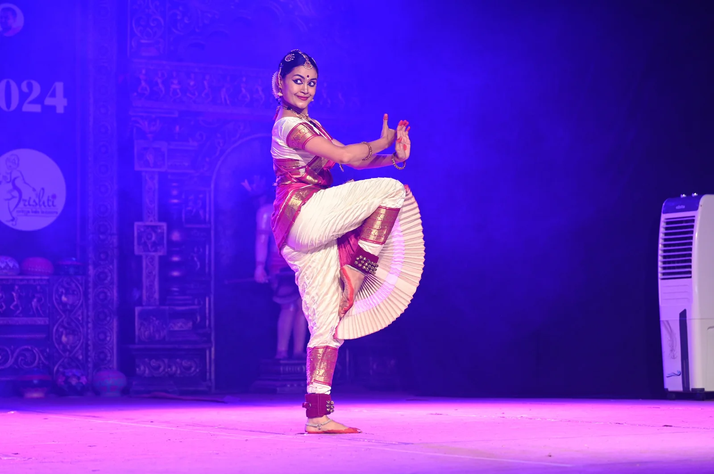

BHARATANATYAM
BHARATANATYAM04 / On stage
The stage
as offering.
Solo recitals, complete mārgams and stories told through movement.
Bharatanatyam performance
Rama Govinda Ranga Mandira
Vidushi Krithi Kailar · Mysuru
Nrupatunga Kannada School, Nirvikalpa Road
E & F Block, Ramakrishna Nagar, MysuruView performance venue on Google Maps
E & F Block, Ramakrishna Nagar, MysuruView performance venue on Google Maps

Across Karnataka & Kerala
Two complete mārgams.
Many moments of meeting.
A selection of stages and festivals from Krithi’s performance journey.

- Jaganmohan Palace, Mysore Dasara festivities (2026)
- Rajangana stage, Śrī Kṛṣṇa Mutt, Udupi
- Guruvayur Temple, Kerala
- Suttur Jathra Mahotsava
- Puttur Dasara
- Śrī Lakṣmī Narasiṃha Svāmī Temple, K. Belathur (Nṛtya Sevā)
- Melukote
- Mahākālī Mecchi Nemotsava, Uppinangady
- Abhivyakti Habba (2022 to 2025)
- Kisan Swaraj Sammelana (2022 and 2025)
- Save Soil Campaign, Isha Foundation
- Veene Sheshanna Bhavana, Ganabharati, Mysuru
Performance films
In motion. In the moment.
Repertoire
Nṛtta. Nṛtya.
Abhinaya.
Alarippu · Jātisvaram · Śabdam · Varṇam · Padam · Javali · Kīrtanam · Aṣṭapadi · Devaranāma · Tillānā · Maṅgalam · Śloka-based presentations